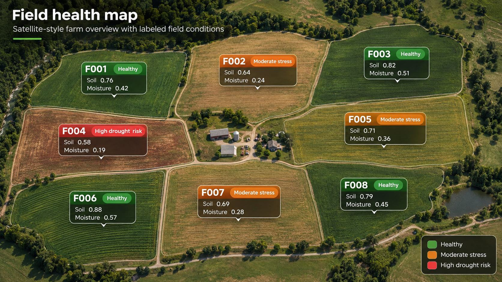

FIELD F001 / DEMO DATA
F001 · Test field, understood.
Demo data • Balanced priority profile
Equipment constraint: row crops only
Soil health
0.81 SH
OC 2.8% · pH 6.5
Annual rainfall
530 mm
Illustrative annual total
Root-zone moisture
0.35 RZM
Sample soil moisture
Soil temperature
18.6°C
Above planting threshold
Why this rotation won
Legume rotation supports soil nitrogen.
Cover crops protect soil between seasons.
Rotation score breakdown
Soil health
Water safety
Resilience
Yield potential
Ranked alternatives · illustrative scores
| RANK | ROTATION | TOTAL SCORE | WATER SAFETY |
|---|---|---|---|
| 01 | Soybean → Cover crop mix → Corn | 0.86 | 0.88 |
| 02 | Sorghum → Soybean → Rye | 0.81 | 0.92 |
| 03 | Corn → Soybean → Cover crop mix | 0.77 | 0.84 |

Crop water demand
Annual rainfall: 452 mm
Rye
180 mm
Sorghum
300 mm
Soybean
450 mm
Corn
550 mm
Alfalfa
600 mm
Seasonal shifts · 2023 vs 2024
Illustrative trend comparison / rainfall, heat and NDVI
NASA satellite estimate
Regional observation
Root-zone moisture
0.35 m³/m³
Air temperature
24.8 °C
Recent precipitation
220 mm
Elegoo Uno readings
Local ground-truth · demo
Root-zone moisture
0.22 m³/m³ (Dry)
Soil temperature
20.9 °C
Air humidity
38 % RH
From satellite to soil.
01
Move the capacitive probe from wet to dry soil.
02
Compare local readings against the NASA estimate.
03
Watch the recommended crop rotation change.